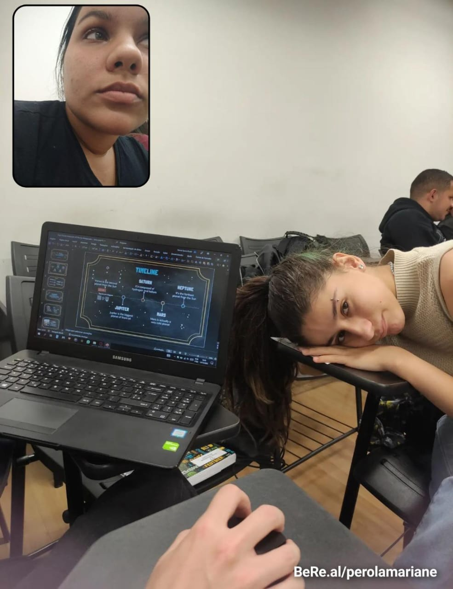
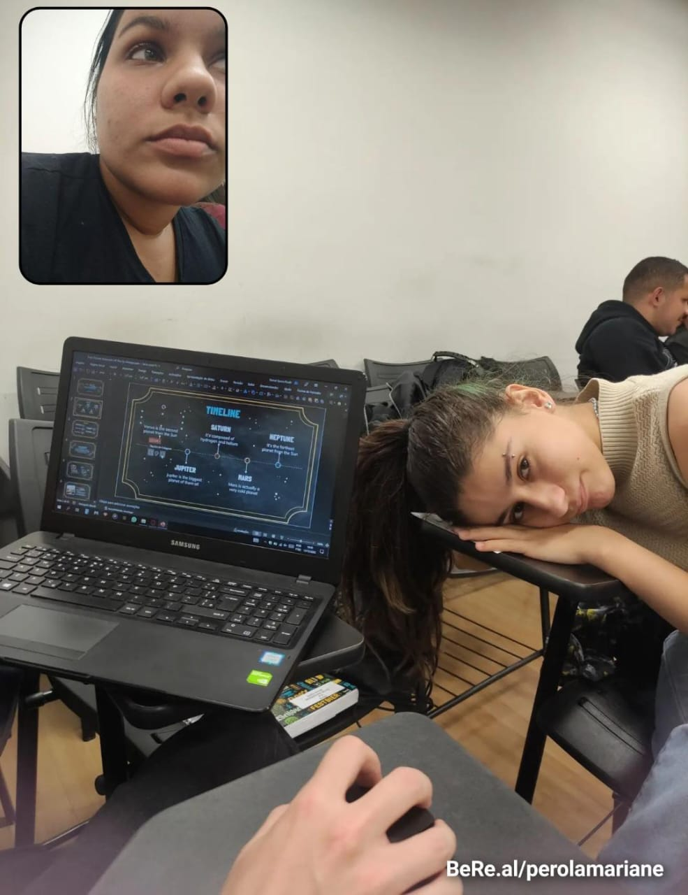

Dá play aqui primeiro
Minha irmã, minha parceira de todas as horas. Você tá sempre comigo, nas ideias mais malucas, nas brigas, nos momentos bons e ruins. Mesmo quando você tá insuportável (e dá vontade de te bater), eu vou aguentar, porque não existe irmã melhor que você.
Sempre risonha, brincando até quando não pode, e falando tudo enrolado—sério, uma fono ia te ajudar muito! Mas mesmo assim, eu te entendo melhor que ninguém. Você é minha cúmplice, minha melhor amiga, e minha maior sorte.
Te amo, sua doida! Melhor irmã que eu podia ter!


A Carol é minha alma gêmea! Ela é um Sol na Terra. Já foi minha fotógrafa, decoradora, organizadora de festas, psicóloga e mais mil funções (desconfio que ela é a Barbie nos tempos vagos). Quando ninguém mais me entende, ela entende, a ideia mais louca, aqueles pensamentos intrusivos que as vezes não temos nem coragem de colocar pra fora, sei que posso falar pra ela e ela sempre vai estar lá; se um dia eu pensasse em uma amiga imaginaria perfeita pra mim não chegaria aos pés dela. Por mais que goste de pensar que Deus enviou ela pra mim e sinta ciúmes de ela ter outras relações sociais sem ser comigo kkkkk sei que seria egoísta não dividir ela com as pessoas porque o mundo está escasso de pessoas assim, com alma tão pura e bondosa, com amor incondicional... e sei que o mundo é um lugar melhor por ter ela e sou grata por ter o privilégio de conhecê-la tão de perto! Te amo amor, um amor tão infinito que é impossível mensurar em palavras ❤️


A Carol é luz, vida, ela é a esperança em forma de gente nos dias difíceis, ela é a alegria de uma criança feliz, ela é o dia ensolarado na praia e também o dia chuvoso embaixo das cobertas assistindo aquela comédia romântica, ela é inteligência de uma professora que está sempre estudando (e eu tenho certeza que será uma professora incrível).
Ela é a irmã que a vida me deu!
Nada explica nossa amizade, foi Deus que uniu a gente, eu tenho certeza absoluta e sou e sempre vou ser muito grata por isso!
Eu amo ela demais demais!
Espero que ela saiba que pode contar comigo para sempre!
 

Ei Carol, você sabe que eu sempre dou umas risadinhas quando você fala algo errado, né? Não posso negar, é impossível não zoar um pouquinho! Mas, olha, isso não muda o fato de que você é super importante pra mim. A sua amizade, seu jeito único de ser, e até as palavras tortinhas fazem com que você seja alguém que eu gosto muito e que faz diferença na minha vida. Não importa o quanto você erre no português, pra mim, você sempre vai ser a pessoa incrível que é. E, claro, continuarei zoando, porque é impossível não me divertir, mas saiba que é tudo com muito carinho e respeito, gosto muito do seu jeito alegre de ser, encantando todos a sua volta, sua amizade para mim vale ouro, é um tesouro que não trocaria ou venderia por nada nesse mundo, saiba que estarei sempre aqui caso precise de algo, pode contar cmg sempre.

Carol, você é um anjo que Deus colocou em minha vida, e eu sou muito grato por ter a sua amizade!! se todo mundo tivesse uma Carol ao lado, com certeza o mundo seria muito melhor.
Você já sabe o quanto você é importante para mim, sou grato por tudo oq vc já fez por mim, todo conselho, puxão de orelha, e por ter me escutado em todas as vezes q eu precisei, bom.. nem vou me alongar tanto porque vc já sabe de tudo isso.
eu amo voc√™ Carol, que Deus aben√ßoe a sua vida e te proteja sempre! que voc√™ nunca perca esse seu jeitinho unico, esse brilho imenso que vc tem e principalmente que nunca te faltem motivos para sorrir! voc√™ encanta a todos que estão ao seu lado, voc√™ já sabe o quanto √© especial para todos n√≥s, eu sou muito feliz de poder vivenciar momentos com voc√™, √© imposs√≠vel não sorrir quando voc√™ está, seja pelas brincadeiras, pelas conversas ou ate mesmo palavras que saem erradas kkkkkkkkkkk √© muito bom poder ser seu amigo, obrigado por tudo, tudo mesmo e n√≥s te amamos!!!ü´∂‚ù§Ô∏è


Esse ano a ideia foi um pouco mais trabalhosa que ano passado, mas eu garanto que foi feito com tanto carinho quanto, só pra deixar claro em como você é uma pessoa muito especial pra mim, poucas vezes eu não me senti confortável na sua presença, uma pessoas que irradia alegria e esperança por onde passa, e espero que o mundo nem ninguém consiga mudar você, e juro, moveria mundos e fundos, só pra ver você feliz, o próximo texto é o ultímo, já vai poder ser recompor


Acho que você já conseguiu entender como você é especial, não só pra mim, mas como pra todos que te cercam e vivem com você, não vou me alongar em detalhes sobre como você é incrível, porque acho que já ficou bem claro, mas como eu já disse aqui em cima, espero realmente que você nunca deixei o mundo mudar seu jeito incrível, seu humor contagiante, sua alegria com as coisas simples do dia a dia e a simplicidade da existência, que a gente sabe que as vezes é muito mais dificíl do que parece... Enfim o fim, novamente, que Deus abençoe profundamente a sua vida, e que você possa realizar sempre os seus sonhos e objetivos com êxito